Chapter 10 Analyze familiar word recognition
Next steps:
- Model year over year changes.
- Download test scores and individual differences.
- Analyze individual differences
library(dplyr)
#> Warning: package 'dplyr' was built under R version 3.4.2
library(rlang)
library(littlelisteners)
library(ggplot2)
#' group `data` by some grouping variables (`...`),
#' randomly select `size` of the groups
#' keep just the data from those sampled groups
sample_n_of <- function(data, size, ...) {
dots <- quos(...)
rows <- data_frame(row = seq_len(nrow(data)))
rows[, "group"] <- data %>%
group_by(!!! dots) %>%
group_indices()
subset <- rows %>%
filter(.data$group %in% sample(unique(.data$group), size)) %>%
pull(.data$row)
data[subset, ]
}10.1 Data preparation
Earlier we cleaned the data to remove trials with excessive missing data and blocks of trials with too few trials. Read in that data.
data <- readr::read_csv("./data/aim1-screened.csv.gz")Downsample into 50 ms bins.
data <- data %>%
select(Study, ResearchID, TrialID:GazeByImageAOI) %>%
assign_bins(bin_width = 3, Time, TrialID)
# Compute time at center of each bin
bin_times <- data %>%
distinct(Time, .bin) %>%
group_by(.bin) %>%
mutate(BinTime = round(median(Time), -1)) %>%
ungroup()
# Attach bin times
binned <- data %>%
left_join(bin_times, by = c("Time", ".bin")) %>%
ungroup() %>%
select(-Time) %>%
rename(Time = BinTime)
resp_def <- create_response_def(
primary = "Target",
others = c("PhonologicalFoil", "SemanticFoil", "Unrelated"),
elsewhere = "tracked",
missing = NA
)
d <- binned %>%
aggregate_looks(resp_def, Study + ResearchID + Time ~ GazeByImageAOI)
d_m <- d %>%
filter(250 <= Time, Time <= 1500) %>%
polypoly::poly_add_columns(Time, degree = 3,
scale_width = 1, prefix = "ot")Plot the model-ready data. Use empirical logit because straight log-odds has too high of values for plotting.
ggplot(d_m) +
aes(x = Time, y = empirical_logit(Primary, Others)) +
geom_line(aes(group = ResearchID), alpha = .2) +
stat_smooth() +
theme_grey(base_size = 9) +
facet_grid(. ~ Study) +
labs(x = "Time after target onset (smoothed to 50 ms bins)",
y = "Emp. logit looking to target")
#> `geom_smooth()` using method = 'gam'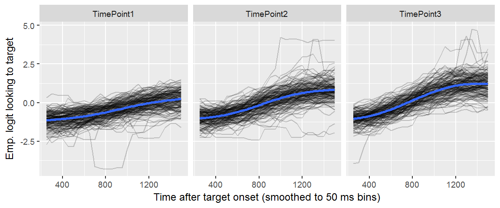
10.2 Maximum likelihood results
Fit a maximum likelihood model as a first pass for the analysis. We won’t fit the model automatically (whenever this page is updated). It’s too time consuming. Instead, we do it manually here, and save the results.
library(lme4)
m <- glmer(
cbind(Primary, Others) ~
(ot1 + ot2 + ot3) * Study +
(ot1 + ot2 + ot3 | ResearchID/Study),
family = binomial,
data = d_m)
readr::write_rds(m, "./data/aim1_cubic_model.rds.gz")And reload the saved model here.
library(lme4)
#> Loading required package: Matrix
#> Loading required package: methods
m <- readr::read_rds("./data/aim1_cubic_model.rds.gz")
arm::display(m)
#> glmer(formula = cbind(Primary, Others) ~ (ot1 + ot2 + ot3) *
#> Study + (ot1 + ot2 + ot3 | ResearchID/Study), data = d_m,
#> family = binomial)
#> coef.est coef.se
#> (Intercept) -0.47 0.03
#> ot1 1.58 0.06
#> ot2 0.05 0.04
#> ot3 -0.17 0.03
#> StudyTimePoint2 0.41 0.03
#> StudyTimePoint3 0.70 0.04
#> ot1:StudyTimePoint2 0.56 0.08
#> ot1:StudyTimePoint3 1.10 0.08
#> ot2:StudyTimePoint2 -0.16 0.05
#> ot2:StudyTimePoint3 -0.35 0.05
#> ot3:StudyTimePoint2 -0.12 0.04
#> ot3:StudyTimePoint3 -0.21 0.04
#>
#> Error terms:
#> Groups Name Std.Dev. Corr
#> Study:ResearchID (Intercept) 0.30
#> ot1 0.68 0.18
#> ot2 0.44 -0.12 0.03
#> ot3 0.29 -0.09 -0.44 -0.05
#> ResearchID (Intercept) 0.27
#> ot1 0.46 0.86
#> ot2 0.09 -0.99 -0.85
#> ot3 0.03 -0.92 -0.98 0.92
#> Residual 1.00
#> ---
#> number of obs: 12584, groups: Study:ResearchID, 484; ResearchID, 195
#> AIC = 74467.3, DIC = -61745.9
#> deviance = 6328.7
# f1 <- function(data) {
# glmer(
# cbind(Primary, Others) ~
# (ot1 + ot2 + ot3) +
# (ot1 + ot2 + ot3 | ResearchID),
# family = binomial,
# data = data)
# }
#
# separate_studies <- d_m %>%
# tidyr::nest(-Study) %>%
# mutate(model = purrr::map(data, f1))
d_m$cubic_fit <- fitted(m)
ggplot(d_m) +
aes(x = Time, y = cubic_fit) +
geom_line(aes(group = ResearchID), alpha = .2) +
stat_smooth(method = "gam") +
facet_grid(. ~ Study) +
labs(
x = "Time after target onset (smoothed to 50 ms bins)",
y = "Proportion looks to target (fitted)") +
theme_grey(base_size = 9) 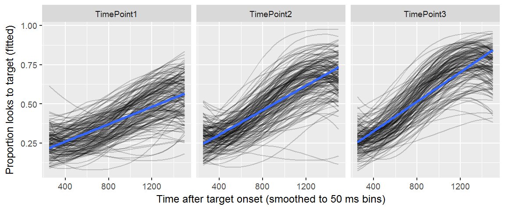
What’s being captured by the random effects?
predict_y <- function(...) predict(..., type = "response")
d_m$subj_fit <- predict_y(m, re.form = ~ (ot1 + ot2 + ot3 | ResearchID))
ggplot(d_m) +
aes(x = Time, y = subj_fit) +
geom_line(aes(group = ResearchID), alpha = .2) +
facet_grid(. ~ Study) +
theme_grey(base_size = 9) +
labs(
x = "Time after target onset (smoothed to 50 ms bins)",
y = "Proportion looks to target (fitted)",
caption = "Conditioned on Child effects") 
# d_m$study_fit <- predict_y(m, re.form = ~ (ot1 + ot2 + ot3 | Study:ResearchID))
# ggplot(d_m) +
# aes(x = Time, y = study_fit) +
# geom_line(aes(group = ResearchID), alpha = .2) +
# facet_grid(. ~ Study) +
# theme_grey(base_size = 9) +
# labs(
# x = "Time after target onset (smoothed to 50 ms bins)",
# y = "Proportion looks to target (fitted)",
# caption = "Conditioned on Study x Child effects") d_corr <- d_m %>%
group_by(Time, Study) %>%
summarise(r = cor(Prop, cubic_fit))
ggplot(d_corr) +
aes(x = Time, y = r, color = Study) +
geom_point(shape = 1, size = 3) +
ylim(c(.8, 1)) +
labs(
x = "Time after target onset (smoothed to 50 ms bins)",
y = "Correlation of fitted and observed") +
theme_grey(base_size = 9) +
theme(
legend.position = c(0.025, 0.05),
legend.justification = c(0, 0)) 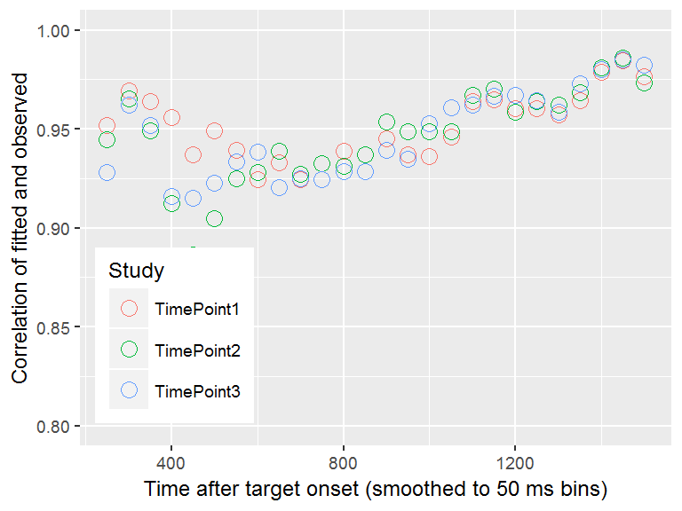
# ggplot(d_m) +
# aes(x = Prop, y = cubic_fit) +
# geom_point(shape = 1, alpha = .2) +
# geom_abline(color = "blue", size = 2)
# geom_line(aes(group = ResearchID), alpha = .2) +
# stat_smooth() +
# facet_grid(. ~ Study) +
# labs(y = "Proportion looks to target [model fits]",
# x = "Time after target onset (smoothed to 50 ms bins)")
# ggplot(inner_join(d_m, ranks),) +
# aes(x = Time, y = cubic_fit, color = -slope) +
# geom_line(aes(group = ResearchID), alpha = .4) +
# viridis::scale_color_viridis() +
# facet_grid(. ~ Study)
# geom_line(aes(group = ResearchID), data = semi_join(d_m, top_10), size = 1, color = "blue") +
# geom_line(aes(group = ResearchID), data = semi_join(d_m, bot_10), size = 1, color = "red") +Visualize the top and bottom 20 children (pooled over studies).
xstudy_effects <- m %>%
ranef() %>%
getElement("ResearchID") %>%
tibble::rownames_to_column("ResearchID") %>%
as_tibble() %>%
select(ResearchID, intercept = `(Intercept)`, slope = ot1)
top_20 <- top_n(xstudy_effects, 20, slope)
bot_20 <- top_n(xstudy_effects, 20, -slope)
ggplot(d_m) +
aes(x = Time, y = cubic_fit) +
geom_line(aes(group = ResearchID), alpha = .2) +
geom_line(aes(group = ResearchID), data = semi_join(d_m, top_20),
size = .7, color = "#0074D9") +
geom_line(aes(group = ResearchID), data = semi_join(d_m, bot_20),
size = .7, color = "#FF4136") +
facet_grid(. ~ Study) +
theme_grey(base_size = 9) +
labs(y = "Proportion looks to target [model fits]",
x = "Time after target onset (smoothed to 50 ms bins)",
caption = "Colors: Top 20 and bottom 20 children by linear time effect")
#> Joining, by = "ResearchID"
#> Joining, by = "ResearchID"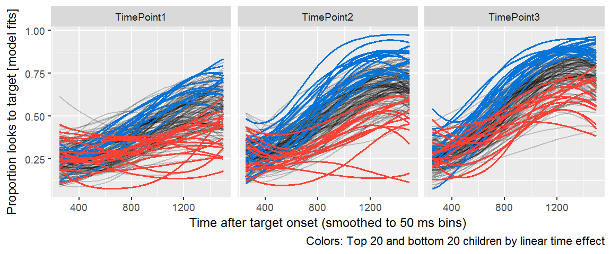
Plot the ranks on the raw data.
ggplot(d_m) +
aes(x = Time, y = Prop) +
geom_line(aes(group = ResearchID), alpha = .2) +
geom_line(aes(group = ResearchID), data = semi_join(d_m, top_20),
size = .7, color = "#0074D9") +
geom_line(aes(group = ResearchID), data = semi_join(d_m, bot_20),
size = .7, color = "#FF4136") +
facet_grid(. ~ Study) +
labs(y = "Proportion looks to target",
x = "Time after target onset (smoothed to 50 ms bins)",
caption = "Colors: Top 20 and bottom 20 children by linear time effect")
#> Joining, by = "ResearchID"
#> Joining, by = "ResearchID"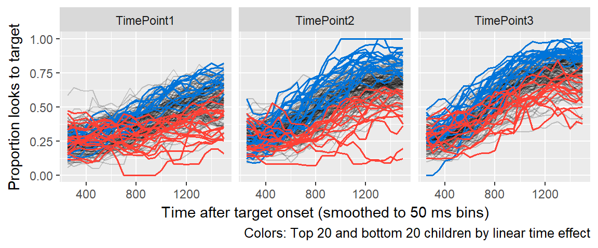
10.3 Bayesian model results
Here is the code used to fit the model with Stan. It took about 24 hours to run the model.
library(rstanarm)
options(mc.cores = parallel::detectCores())
m <- stan_glmer(
cbind(Primary, Others) ~
(ot1 + ot2 + ot3) * Study +
(ot1 + ot2 + ot3 | ResearchID/Study),
family = binomial,
prior = normal(0, 1),
prior_intercept = normal(0, 5),
prior_covariance = decov(2, 1, 1),
data = d_m)
readr::write_rds(m, "./data/stan_aim1_cubic_model.rds.gz")Let’s try to understand our model by making some plots.
10.3.1 Fixed effects plots
First, let’s prepare to plot the intervals for the fixed effects.
library(rstanarm)
#> Loading required package: Rcpp
#> Warning: package 'Rcpp' was built under R version 3.4.2
#> rstanarm (Version 2.15.3, packaged: 2017-04-29 06:18:44 UTC)
#> - Do not expect the default priors to remain the same in future rstanarm versions.
#> Thus, R scripts should specify priors explicitly, even if they are just the defaults.
#> - For execution on a local, multicore CPU with excess RAM we recommend calling
#> options(mc.cores = parallel::detectCores())
library(bayesplot)
#> This is bayesplot version 1.4.0.9000
#> - Plotting theme set to bayesplot::theme_default()
#> - Online documentation at mc-stan.org/bayesplot
theme_set(theme_grey())
library(stringr)
library(ggstance)
#>
#> Attaching package: 'ggstance'
#> The following objects are masked from 'package:ggplot2':
#>
#> geom_errorbarh, GeomErrorbarh
parse_text <- function(x) parse(text = x)
b <- readr::read_rds("./data/stan_aim1_cubic_model.rds.gz")
b
#> stan_glmer
#> family: binomial [logit]
#> formula: cbind(Primary, Others) ~ (ot1 + ot2 + ot3) * Study + (ot1 + ot2 +
#> ot3 | ResearchID/Study)
#> ------
#>
#> Estimates:
#> Median MAD_SD
#> (Intercept) -0.5 0.0
#> ot1 1.6 0.1
#> ot2 0.0 0.0
#> ot3 -0.2 0.0
#> StudyTimePoint2 0.4 0.0
#> StudyTimePoint3 0.7 0.0
#> ot1:StudyTimePoint2 0.6 0.1
#> ot1:StudyTimePoint3 1.1 0.1
#> ot2:StudyTimePoint2 -0.2 0.0
#> ot2:StudyTimePoint3 -0.4 0.1
#> ot3:StudyTimePoint2 -0.1 0.0
#> ot3:StudyTimePoint3 -0.2 0.0
#>
#> Error terms:
#> Groups Name Std.Dev. Corr
#> Study:ResearchID (Intercept) 0.305
#> ot1 0.691 0.20
#> ot2 0.437 -0.11 0.02
#> ot3 0.294 -0.11 -0.44 -0.06
#> ResearchID (Intercept) 0.264
#> ot1 0.423 0.78
#> ot2 0.125 -0.75 -0.56
#> ot3 0.058 -0.23 -0.31 0.19
#> Num. levels: Study:ResearchID 484, ResearchID 195
#>
#> Sample avg. posterior predictive
#> distribution of y (X = xbar):
#> Median MAD_SD
#> mean_PPD 49.9 0.1
#>
#> ------
#> For info on the priors used see help('prior_summary.stanreg').
intervals <- mcmc_intervals_data(as.data.frame(b), pars = names(fixef(b)))
# Rename to use mathematical formatting
intervals$pname <- intervals$parameter %>%
str_replace("ot(2|3)", "Time^\\1") %>%
str_replace("ot(1)", "Time") %>%
str_replace(".Intercept.", "Intercept") %>%
str_replace("Study", "") %>%
str_replace(":", " %*% ") %>%
factor(., levels = rev(.))Below the TimePoint2, TimePoint3, Time x TimePoint2, and Time x TimePoint3 effects confirm that children get more reliable and faster each year of the study. Only the Time2 effect is near 0, which does not matter. We mostly care about the intercept and time terms.
ggplot(intervals) +
aes(y = pname) +
geom_vline(xintercept = 0, size = 2, color = "white") +
geom_linerangeh(aes(xmin = ll, xmax = hh)) +
geom_linerangeh(aes(xmin = l, xmax = h), size = 2) +
geom_point(aes(x = m), size = 3, shape = 3) +
scale_y_discrete(labels = parse_text) +
labs(x = NULL, y = NULL, caption = "90% and 50% intervals") +
ggtitle("Average effects")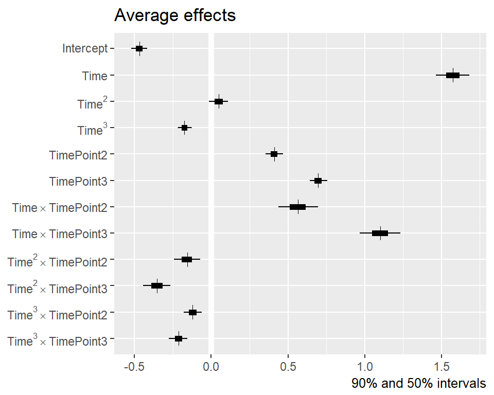
Now, let’s undo interactions by adding year 1 main effects to interaction effects and plot the effects for each year of the study. For each effect, there appears to be a linear trend in the change from TP1 to TP2 and from TP2 to TP3.
# Column names will have mathematical formatting too
draws <- as.data.frame(b) %>%
as_tibble() %>%
transmute(
`Intercept~~(TP1)` = `(Intercept)`,
`Intercept~~(TP2)` = `(Intercept)` + StudyTimePoint2,
`Intercept~~(TP3)` = `(Intercept)` + StudyTimePoint3,
`Time~~(TP1)` = ot1,
`Time~~(TP2)` = ot1 + `ot1:StudyTimePoint2`,
`Time~~(TP3)` = ot1 + `ot1:StudyTimePoint3`,
`Time^2~~(TP1)` = ot2,
`Time^2~~(TP2)` = ot2 + `ot2:StudyTimePoint2`,
`Time^2~~(TP3)` = ot2 + `ot2:StudyTimePoint3`,
`Time^3~~(TP1)` = ot3,
`Time^3~~(TP2)` = ot3 + `ot3:StudyTimePoint2`,
`Time^3~~(TP3)` = ot3 + `ot3:StudyTimePoint3`)
intervals2 <- mcmc_intervals_data(draws) %>%
mutate(parameter = factor(parameter, levels = rev(parameter)))
ggplot(intervals2) +
aes(y = parameter) +
geom_vline(xintercept = 0, size = 2, color = "white") +
ggstance::geom_linerangeh(aes(xmin = ll, xmax = hh)) +
ggstance::geom_linerangeh(aes(xmin = l, xmax = h), size = 2) +
geom_point(aes(x = m), size = 3, shape = 3) +
scale_y_discrete(labels = parse_text) +
labs(x = NULL, y = NULL, caption = "90% and 50% intervals") +
ggtitle("Average effects by study")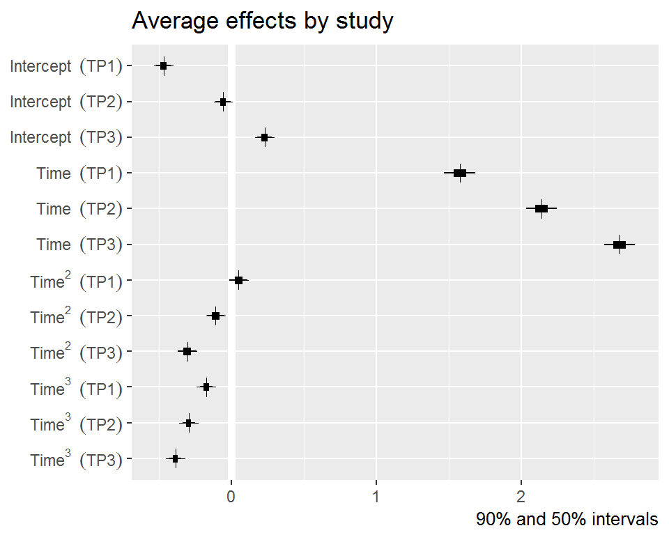
Bayesplot supports transformations so we could invert the log-odds measure to see the intercepts (area under curve/average accuracy) in proportion units.
intervals3 <- mcmc_intervals_data(draws, regex_pars = "Intercept",
transformations = "plogis") %>%
mutate(parameter = factor(parameter, levels = rev(parameter)))
intervals3 %>%
mutate_if(is.numeric, round, 3) %>%
select(-point_est) %>%
rename(outer = outer_width, inner = inner_width) %>%
knitr::kable()| parameter | outer | inner | ll | l | m | h | hh |
|---|---|---|---|---|---|---|---|
| plogis(Intercept~~(TP1)) | 0.9 | 0.5 | 0.372 | 0.380 | 0.385 | 0.390 | 0.397 |
| plogis(Intercept~~(TP2)) | 0.9 | 0.5 | 0.473 | 0.480 | 0.485 | 0.490 | 0.498 |
| plogis(Intercept~~(TP3)) | 0.9 | 0.5 | 0.544 | 0.551 | 0.557 | 0.562 | 0.569 |
ggplot(intervals3) +
aes(y = parameter) +
geom_vline(xintercept = .25, size = 2, color = "white") +
ggstance::geom_linerangeh(aes(xmin = ll, xmax = hh)) +
ggstance::geom_linerangeh(aes(xmin = l, xmax = h), size = 2) +
geom_point(aes(x = m), size = 3, shape = 3) +
scale_y_discrete(labels = parse_text) +
labs(x = NULL, y = NULL, caption = "90% and 50% intervals") +
ggtitle("Average accuracy by year")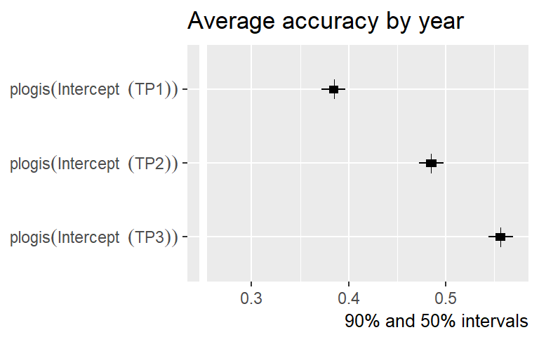
10.3.2 Posterior predictive checks
Next, we let’s check how well the model can simulate the observed data.
rstanarm::pp_check(b, nreps = 200, seed = "09272017") +
labs(
x = "Proportion of looks",
title = "Observed data and 200 posterior simulations") +
guides(color = "none") +
coord_cartesian(xlim = c(0, 1))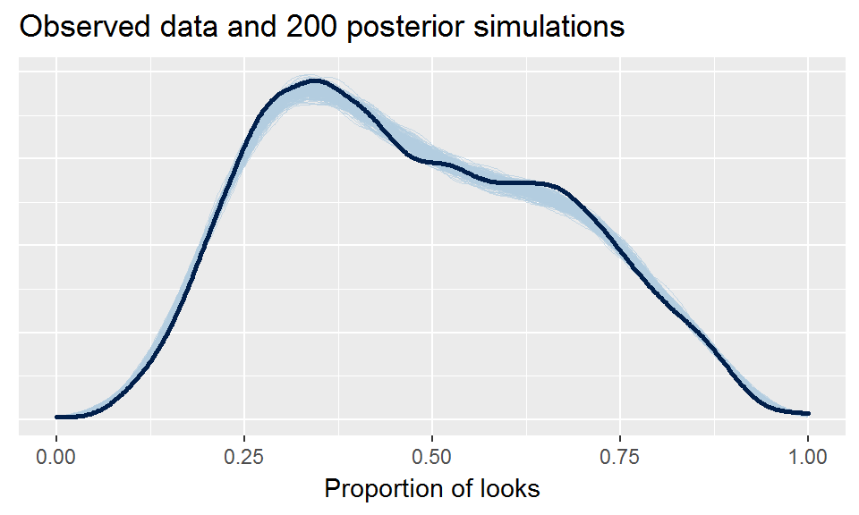
10.3.3 Look at some predictions
Plot the posterior predictions for random participants. This is the model simulating new data for these participants.
set.seed(09272017)
ppred <- d_m %>%
sample_n_of(8, ResearchID) %>%
tristan::augment_posterior_predict(b, newdata = ., nsamples = 100) %>%
mutate(trials = Primary + Others)
ggplot(ppred) +
aes(x = Time, y = Prop, color = Study, group = Study) +
geom_line(aes(y = .posterior_value / trials,
group = interaction(.draw, Study)),
alpha = .20) +
geom_line(size = 1, color = "grey50") +
facet_wrap("ResearchID") +
theme(
legend.position = c(.95, 0),
legend.justification = c(1, 0),
legend.margin = margin(0)) +
guides(color = guide_legend(title = NULL, override.aes = list(alpha = 1))) +
labs(
title = "Observed means and 100 simulations of new data",
x = "Time after target onset",
y = "Proportion looks to target") 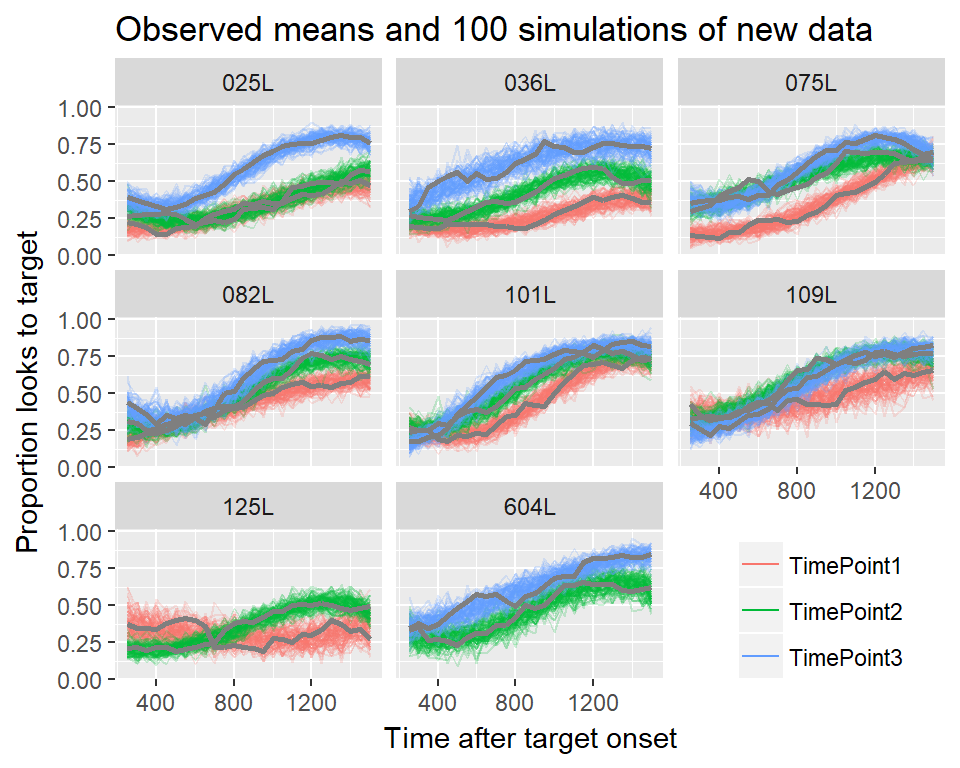
Or we can plot the linear predictions. These are posterior predictions of the log-odds of looking to target before adding binomial noise.
lpred <- d_m %>%
sample_n_of(8, ResearchID) %>%
tristan::augment_posterior_linpred(b, newdata = ., nsamples = 100)
ggplot(lpred) +
aes(x = Time, y = .posterior_value, color = Study) +
geom_line(aes(group = interaction(Study, ResearchID, .draw)),
alpha = .1) +
facet_wrap("ResearchID") +
geom_point(aes(y = qlogis(Prop)), shape = 1) +
theme(
legend.position = c(.95, 0),
legend.justification = c(1, 0),
legend.margin = margin(0)) +
guides(color = guide_legend(title = NULL, override.aes = list(alpha = 1))) +
labs(
title = "Observed data and 100 posterior predictions",
x = "Time after target onset",
y = "Posterior log-odds")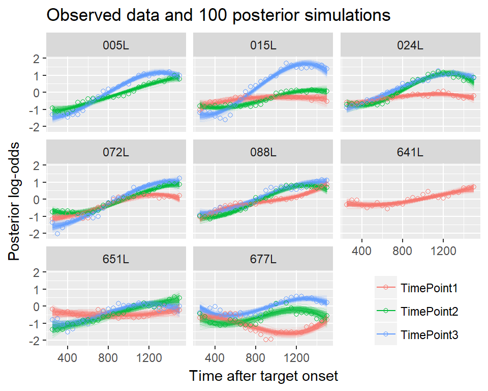
10.3.4 Plot the intervals for the covariances
These are the parameters governing the random effect distributions.
sdcors <- tristan::draw_var_corr(b)
sdcors_wide <- sdcors %>%
select(.draw, .parameter, sdcor) %>%
tidyr::spread(.parameter, sdcor) %>%
select(-.draw)
# Create the mathematical labels for parameters
group_info <- sdcors %>%
select(.parameter:var2) %>%
distinct()
group_info$group <- group_info$grp %>%
stringr::str_replace("Study:ResearchID", "Child-Study") %>%
stringr::str_replace("ResearchID", "Child")
group_info$r <- ifelse(is.na(group_info$var2), "",
paste0(",", group_info$var2))
group_info$sym <- ifelse(is.na(group_info$var2), "sigma", "rho")
group_info$var1 <- ifelse(group_info$var1 == "(Intercept)", "Intercept",
group_info$var1)
group_info$math <- sprintf("%s[list(%s%s)]", group_info$sym,
group_info$var1, group_info$r)
group_info$class <- ifelse(is.na(group_info$var2), "scale", "correlation")
group_info <- group_info %>%
select(group, class, var1, var2, parameter = .parameter, math) %>%
mutate(parameter = as.factor(parameter))
intervals <- as.data.frame(sdcors_wide) %>%
mcmc_intervals_data() %>%
left_join(group_info, by = "parameter") %>%
mutate(math = forcats::fct_rev(math))
ggplot(intervals %>% filter(class == "scale")) +
aes(y = math) +
# Draw medians with + then draw white horizontal lines over the horizontal
# parts of the + symbols
geom_point(aes(x = m), size = 3, shape = 3) +
geom_hline(aes(yintercept = as.numeric(parameter)), color = "white") +
geom_linerangeh(aes(xmin = ll, xmax = hh)) +
geom_linerangeh(aes(xmin = l, xmax = h), size = 2) +
scale_y_discrete(labels = parse_text) +
facet_wrap("group", ncol = 1, strip.position = "left") +
theme(strip.placement = "outside",
strip.background = element_rect(fill = NA),
axis.text.y = element_text(size = rel(1.2))) +
labs(title = "Random effect scales",
x = NULL, y = NULL,
caption = "90% and 50% intervals")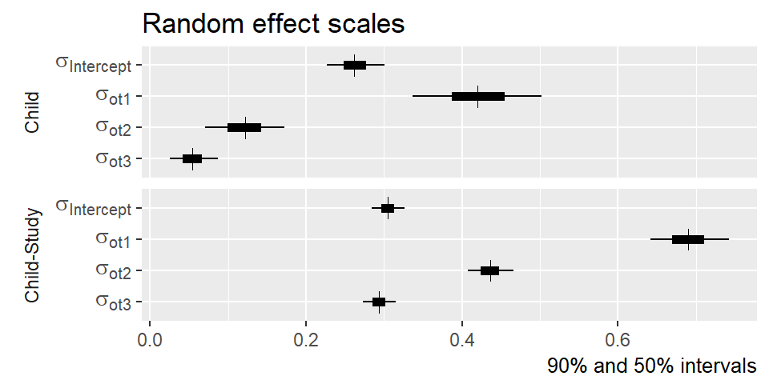
ggplot(intervals %>% filter(class == "correlation")) +
aes(y = math) +
geom_vline(xintercept = 0, size = 2, color = "white") +
# Draw medians with + then draw white horizontal lines over the horizontal
# parts of the + symbols
geom_point(aes(x = m), size = 3, shape = 3) +
geom_hline(aes(yintercept = as.numeric(parameter)), color = "white") +
geom_linerangeh(aes(xmin = ll, xmax = hh)) +
geom_linerangeh(aes(xmin = l, xmax = h), size = 2) +
scale_y_discrete(labels = parse_text) +
facet_wrap("group", ncol = 1, strip.position = "left") +
theme(strip.placement = "outside",
strip.background = element_rect(fill = NA),
axis.text.y = element_text(size = rel(1.2))) +
labs(title = "Random effect correlations",
x = NULL, y = NULL,
caption = "90% and 50% intervals")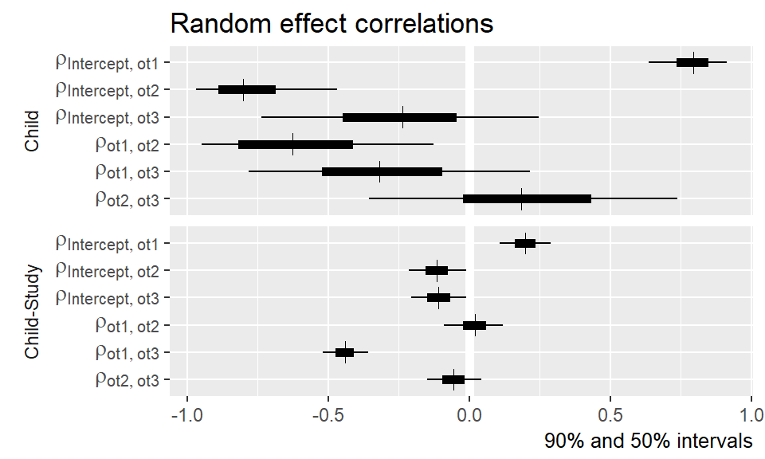